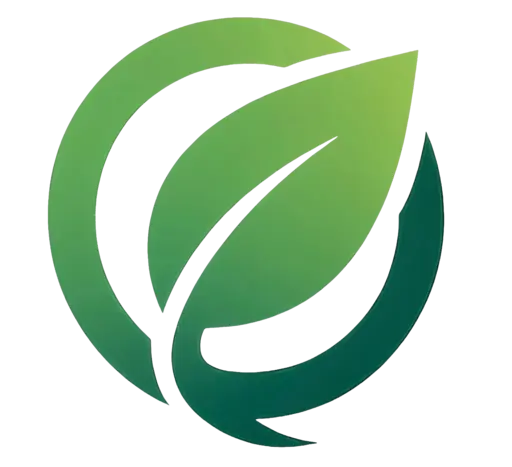
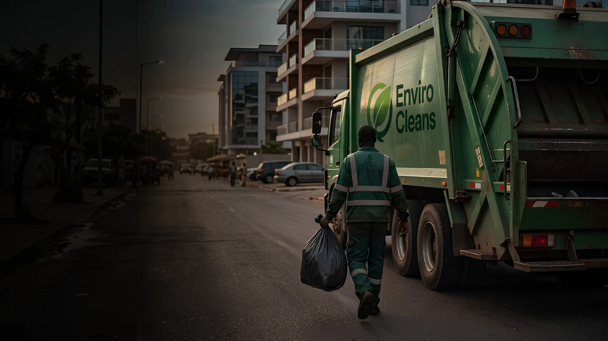
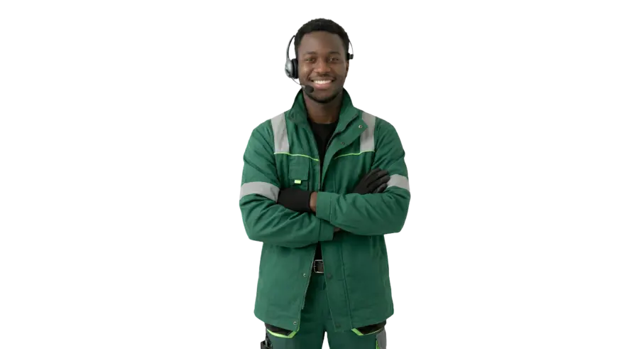

♻
Collecte pour les ménages
Un abonnement adapté à votre fréquence, une adresse enregistrée et des passages suivis.
Choisir ce service →
ENVIRO CLEANSPour un environnement propre et sain
Collecte responsable · Kinshasa
Envirocleans organise la collecte des déchets des ménages et des entreprises avec des équipes locales, des tournées suivies et une expérience simple du premier abonnement à chaque passage.
Nos services
Nous ne vendons pas seulement un passage de camion. Nous organisons une relation de service régulière, visible et contrôlable.
Un abonnement adapté à votre fréquence, une adresse enregistrée et des passages suivis.
Choisir ce service →Une organisation professionnelle pour bureaux, commerces, écoles et sites à besoins réguliers.
Parler à notre équipe →Mieux séparer, récupérer et transformer ce qui peut l'être dans une logique d'économie circulaire.
Découvrir notre vision →Une méthode vérifiable
Une collecte ne démarre qu'après la création et l'affectation d'une tournée. Le service vérifie aussi que l'abonnement du client est actif.
Notre impact
Envirocleans commence par rendre la collecte plus fiable. Cette base permet ensuite de mieux trier, mesurer et valoriser les déchets dans une logique adaptée à la RDC.
Construire un partenariat →La couverture est suivie par zone pour repérer les retards et les secteurs sous-desservis.
Collecteurs, superviseurs et directions travaillent dans des espaces adaptés à leurs responsabilités.
Les tableaux de bord utilisent les paiements, tournées, collectes et rapports enregistrés.
Direction
Une gouvernance complémentaire pour la stratégie, les finances, les opérations, le marketing et les ressources humaines.

Président-directeur général
Directrice générale
Directeur financier
Directrice marketing
Directeur commercial et opérationnel
Directeur des ressources humaines
